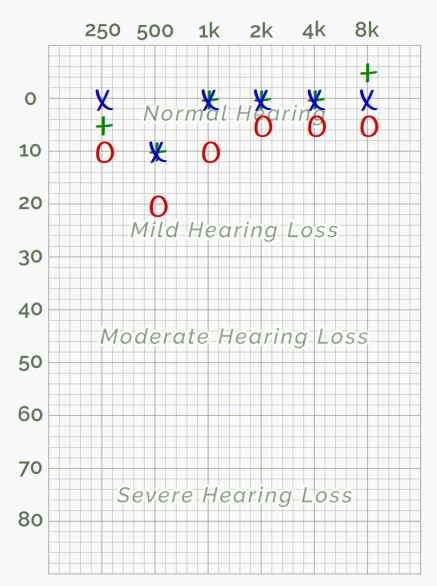
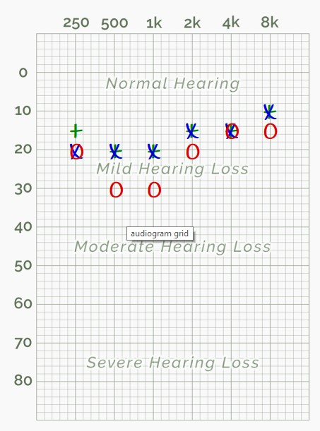
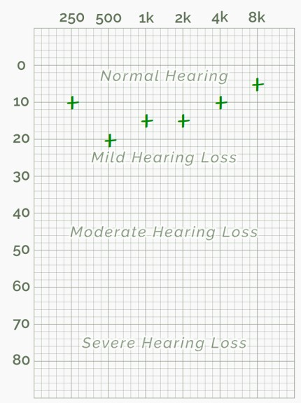
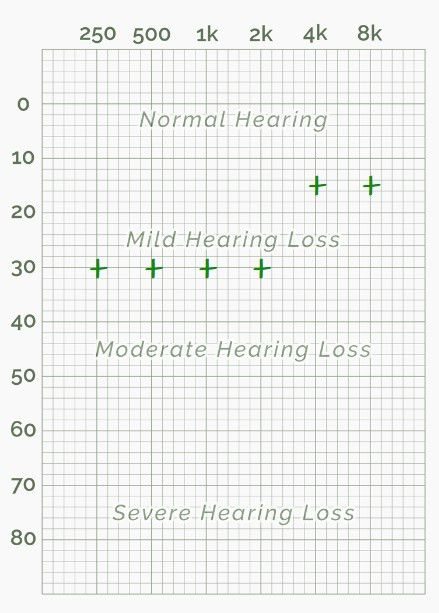
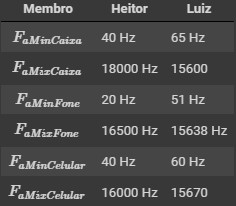

1. Objetivos
Este laboratório tem os seguintes objetivos:
2. Roteiro
Abaixo pode ser visualizado o roteiro original do laboratório:
3. Desenvolvimento
Para o desenvolvimento deste laboratório, foi utilizado o Jupyter Notebook fornecido e editado no Google Colab. O arquivo final pode ser visualizado neste link.
Para melhor organização, esta seção foi dividida em tópicos para abordar os temas do roteiro.
3.1. Teste de audiometria
Na primeira parte do laboratório, foi realizado um teste de audiometria pelo site hearingtest.online (Online Hearing Test and Audiogram Printout). As imagens abaixo apresentam os resultados dos testes realizados pelos membros deste grupo.
Nestas duas primeiras imagens, são exibidos os resultados de Heitor e Luiz, para o teste realizado com fone de ouvido. Os símbolos "+" representam o teste em ambos os ouvidos. Já os símbolos "X" e "O" representam, respectivamente, os resultados para o ouvido esquerdo e direito.
 
Nas duas imagens seguintes, são exibidos os resultados de Heitor e Luiz, para o teste realizado com caixa de som. Os símbolos "+" representam o teste em ambos os ouvidos. Não faria sentido realizar o teste em ouvidos individuais já que trata-se de um teste aberto.
 
Nota-se claramente uma grande diferença na sensibilidade de cada integrante do grupo. Existem vários fatores que podem influenciar no teste, como qualidade dos fones de ouvidos, ruído ambiente, ruído no sistema de áudio utilizado etc. Para uma comparação honesta, o ideal seria submeter os participantes às mesma condições e ambientes de teste. Independente disso, é notável que o Luiz apresenta maior deficiência auditiva.
3.2. Teste de faixa audível
Posteriormente, foi realizada uma verificação da faixa audível de cada membro do grupo pelo sinal sonoro disponível no link https://www.youtube.com/watch?v=H-iCZElJ8m0. Trata-se de um sinal senoidal que varia entre 20 Hz a 20 kHz. Os testes foram executados em fones de ouvido, caixas de som e celular, a fim de se verificar a variação da faixa audível por pessoa e por fonte de áudio utilizada. Os resultados podem ser vistos nas imagens abaixo.

Diferenças são notadas pela capacidade do hardware em questão de reproduzir as frequências mais baixas ou mais altas.
3.3. Teste de mascaramento de tons harmônicos
4. Conclusões
Ao longo do desenvolvimento deste laboratório, foi possível conhecer as técnicas de tratamento usando a Transformada Discreta de Wavelet, além da dua inversa,
realizando a codificação e decodificação de imagens com as funções pywt. Além disso, foi possível experimentar as funções de codificação multinível e verificar
as taxas de compressão em cada processo.